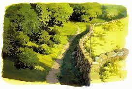

El estudio con mayor número de películas de animación de anime premiadas con un Óscar
Studio Ghibli, acclaimed Japanese animation film studio that was founded in 1985 by animators and directors Miyazaki Hayao and Takahata Isao and producer Suzuki Toshio. Studio Ghibli is known for the high quality of its filmmaking and its artistry. Its feature films won both critical and popular praise and influenced other animation studios. The headquarters are in Tokyo. In 1984 Miyazaki made his second feature film, Kaze no tani no Naushika (Nausicaä of the Valley of the Wind), which was based on his own popular manga strip, and the following year Miyazaki, Takahata, and Suzuki established Studio Ghibli. The first official Studio Ghibli release was Tenkū no shiro Rapyuta (1986; Castle in the Sky). Most of the films produced by Studio Ghibli were written and directed by Miyazaki and include, in addition to the aforementioned, Tonari no Totoro (1988; My Neighbor Totoro), Majo no takkyūbin (1989; Kiki’s Delivery Service), and Kurenai no buta (1992; Porco Rosso).
